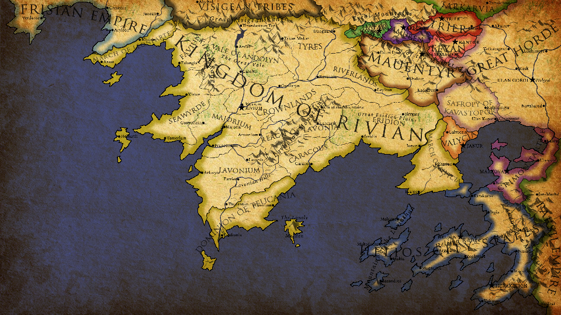

Ad·rak·aris
Dragon; Scale Wing Beast
The Spring of the Earth
kanai'on genthur
Deep in the mountains that touch the sky, through lush vales and snow-covered passes, a great freshwater sea lies at the roof of the world. The many civilisations around it call it the Spring of the Earth.
This site is made by Yijun Hu as a landing page to other places.
The header menu also has a link to a mirror site, which is less heavy on the lore.
Places to Visit
Caeleste Mare
Github

Warwick University